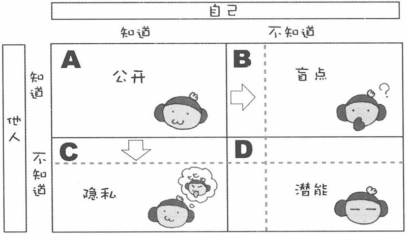
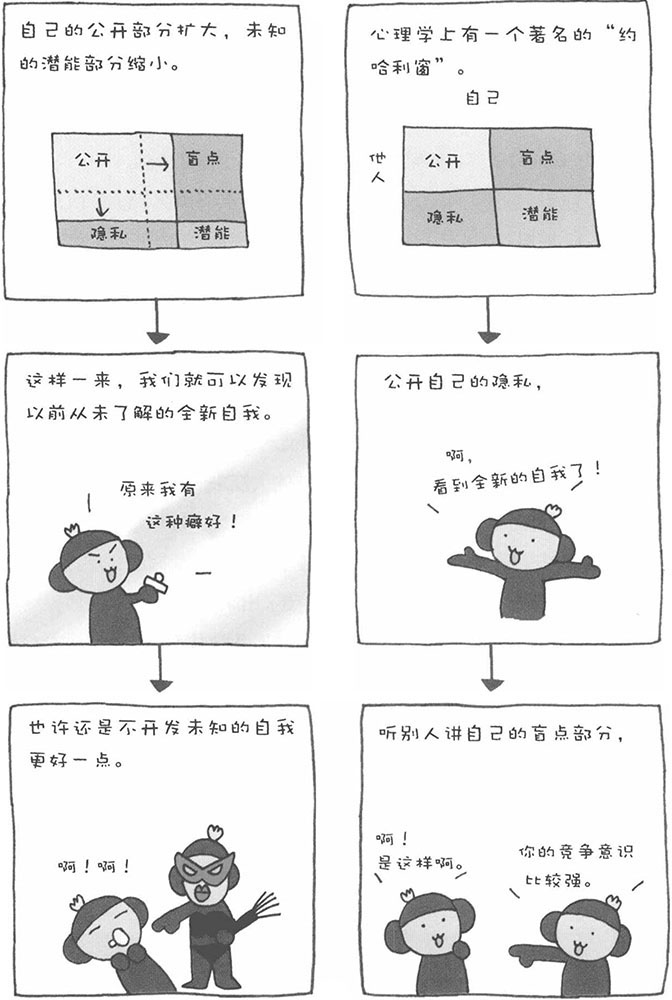

人都认为自己是最了解自己的人。实际上，对于自己，自己也有不知道的地方。很多时候，当朋友为我们指出一些性格上的问题时，我们才第一次意识到自己的另外一面。
比如，有一天朋友对我说："你知道吗？你的性格太要强了，从不服输。"虽然有时嘴上不愿意承认，可心里还是暗自吃了一惊，果真是第一次意识到自己确实有这样的性格倾向。因此，别人可以帮我们发现自己以前不知道的自己。
下图是心理学家约瑟夫和哈利研究出来的"约哈利窗"，他们将"自己的信息"分成了四类。

A是自己知道，别人也知道的公开部分；B是自己不知道，但别人知道的盲点部分；C是自己知道，但别人不知道的隐私部分；D是自己不知道，别人也不知道的潜能部分。如上图所示，如果别人告诉我们自己不知道的自己，B部分就会缩小。同样，如果把自己的隐私C部分公开的话，未知的D部分就会缩小。也就是说，自己和别人都不知道的潜能部分缩小了，即发现了自己的潜能，发现了新的自我。结果，公开的A部分就变大了。
